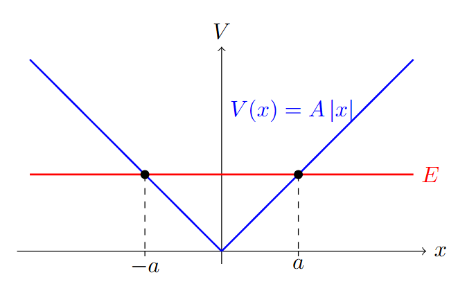
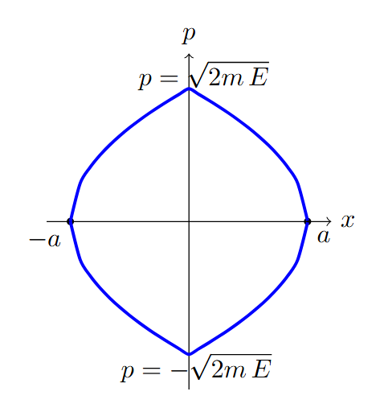
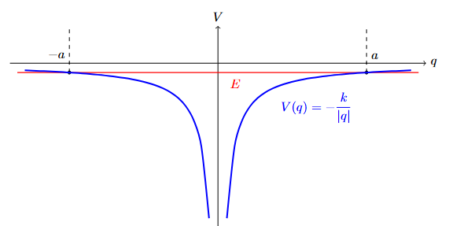
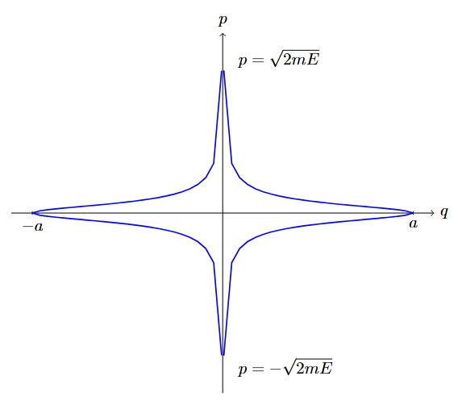

Amennyiben van egy $\mathcal{H}(\underline{q},\underline{p})$ rendszerünk ami szépen viselkedik (integrálható, kötöttek az állapotok, nincs szeparátrix és explicit időfüggés) akkor létezik egy speckó kanonikus trafó a hatás-szög változópárokba, amikkel $$ \begin{aligned} \mathcal{H}(\underline{q},\underline{p}) = \mathcal{H}(\underline{P}) \end{aligned} $$ Ebben a (redukált) hatás változó nem más, mint egy fix energián vett pálya által bezárt fázistérfogat (elosztva $2\pi$-vel): $$ \begin{aligned} P_i = \frac{1}{2\pi}\oint_E p_i \rd q_i \end{aligned} $$ A mozgásegyenletek pedig jelentősen leegyszerűsödnek: $$ \begin{aligned} \dot{P}_i = 0 \qquad\text{és}\qquad \dot{Q}_i = \frac{\partial \mathcal{H}}{\partial P} = \omega. \end{aligned} $$

Általában ilyenkor a periódusidőre vagy a hozzá tartozó frekvenciára vagyunk kíváncsiak. Legyen például egy egydimenziós rendszerünk, aminek a potenciálja $$ \begin{aligned} V(x) = A |x| \end{aligned} $$ A Hamilton tehát $$ \begin{aligned} \mathcal{H} = \frac{p^2}{2m} + A |q| \end{aligned} $$ Feltéve, hogy az energia megmarad: $$ \begin{aligned} \mathcal{H} &=E = \frac{p^2}{2m} + A |q| \\ \frac{p^2}{2m} &= E-A |q| \\ p^2 &= 2mE - 2mA|q| \\ p = \pm\sqrt{2mE - 2mA|q|} &= \pm \sqrt{2mE}\sqrt{1 - \frac{A}{E} |q|} \end{aligned} $$ ami leírja a fázisterünkön a trajektóriákat, adott $E$ mellett.

Az energia a fordulópontban (ami legyen valami $x=q=a$) nem más, mint $$ \begin{aligned} E = Aa \rightarrow a=\frac{E}{A} \end{aligned} $$ mivel ott nincs sebessége a tömegpontunknak. Egy periódus alatt tehát a bezárt terület $$ \begin{aligned} P &= \frac{1}{2\pi} \oint_E p \rd q = \frac{1}{2\pi}\, 4\cdot\int_0^a p(q) \rd q \\ P &= \frac{1}{2\pi}4\sqrt{2mE}\int_{0}^a \sqrt{1 - \frac{q}{a}} \rd q =\frac{1}{2\pi} 4\sqrt{2mE} \cdot \frac{2}{3}a \end{aligned} $$ Itt az integrál amúgy egy egyszerű $1 - \frac{q}{a} \rightarrow u$ változócserével jön ki.
Minden esetre: $$ \begin{aligned} P = \frac{4}{3\pi}a \sqrt{2mE} = \frac{4}{3\pi}\frac{\sqrt{2m}}{A} E^{3/2} \end{aligned} $$ Ahol figyeljünk, hogy $a(E)$ függés is van, azt is vissza kellett írni. Ebből kell nekünk invertálni $P(E)$ függvényt $E(P)$-re: $$ \begin{aligned} P^{2/3} &= \left( \frac{4}{3\pi}\frac{\sqrt{2m}}{A}\right)^{2/3}E \\ E = \mathcal{H} &= \left( \frac{4}{3\pi}\frac{\sqrt{2m}}{A}\right)^{-2/3}P^{2/3} \end{aligned} $$ Tehát: $$ \begin{aligned} \omega &= \frac{\partial \mathcal{H}}{\partial P} = \left( \frac{4}{3\pi}\frac{\sqrt{2m}}{A}\right)^{-2/3} \cdot \frac{2}{3} P^{-1/3} \\ &= \frac{2}{3} \left( \frac{4}{3\pi}\frac{\sqrt{2m}}{A}\right)^{-2/3} \left( \frac{4}{3\pi}\frac{\sqrt{2m}}{A} \right)^{-1/3} E^{-1/2} \\ &= \frac{\pi}{2}\frac{A}{\sqrt{2m E}} \end{aligned} $$
Vizsgáljuk meg a $$ \begin{aligned} V(q) = - k \frac{1}{|q|} \end{aligned} $$ potenciált! Felrajzolva azt látjuk, hogy ez is periodikus mozgásokat okoz, ha az energia negatív. Mi lesz ezeknek a frekvenciája?

Szisztematikusan kiindulva, írjuk fel a Hamiltont: $$ \begin{aligned} \mathcal{H} = \frac{p^2}{2m} - \frac{k}{|q|} \end{aligned} $$ Majd fejezzük ki a lendületet konstans (negatív) energia mellett: $$ \begin{aligned} \frac{p^2}{2m} &= \frac{k}{|q|} - |E| \\ p^2 &= 2m\frac{k}{|q|} - 2m|E| \\ p^2 &= -2m|E| \left(1 - \frac{k}{|E|}\frac{1}{|q|}\right) \\ p^2 &= 2m|E| \left(\frac{k}{|E|}\frac{1}{|q|}-1\right) \\ p_{\pm} &= \pm \sqrt{2m|E|} \sqrt{\frac{k}{|E|}\frac{1}{|q|}-1} \end{aligned} $$ Ezt szeretnénk majd kiintegrálni egy konstans energia által megadott zárt görbére. Mi lesz ez a körintegrál? Először is kiindulhat a rendszer valamilyen (pozitív) $a$ pontból, ahol nincs sebessége, tehát $p_0=0$. Ezt követően legurul a $q=0$ pontba, majd fel a völgy másik oldalán $-a$-ig, mert szimmetrikus a potenciálunk. Innen visszagurul, amíg el nem éri a kiindulási pontot. Ez szép szimmetrikus: felbonthatjuk tehát a körintegrált 4 részre: $$ \begin{aligned} \oint_{E=E_0} = 4 \cdot \int_{a}^{0} p_- \rd q = 4 \cdot \int_{0}^{a} p_+ \rd q \end{aligned} $$

Amire szükségünk van, hogy mi lesz ez az $a$ pont. Kifejezve az energiával, ebben a pontban nem lesz kinetikus energiánk, tehát $$ \begin{aligned} E &= - \frac{k}{|a|} \\ |E| &= \frac{k}{a} \\ a &= \frac{k}{|E|} \end{aligned} $$ Így a kiszámítandó integrál a hatáshoz: $$ \begin{aligned} J = 4 \cdot \int_{0}^{k/|E|} \sqrt{2m|E|} \sqrt{\frac{k}{|E|}\frac{1}{q}-1}\ \rd q \end{aligned} $$ Végezzünk el egy változócserét, amit két dolog motivál: egyrészt az integrál felső határa, másrészt pedig az integrandusban megjelenő faktorok a $q$ mellett: $$ \begin{aligned} u = \frac{|E|}{k} q \qquad\qquad \qquad\qquad \rd u &= \frac{|E|}{k} \rd q \\ u_0 = 1 \qquad\qquad\qquad \qquad\qquad \rd q &= \frac{k}{|E|} \rd u \end{aligned} $$ Ezzel az integrál nem lesz más, mint $$ \begin{aligned} J = 4 \sqrt{2m|E|} \frac{k}{|E|} \cdot \underbrace{ \int_{0}^{1} \sqrt{\frac{1}{u}-1} \rd u }_{= I} \end{aligned} $$ Ahol az integrál eredménye valamilyen szám. Ne is számoljuk ki, csak folytassuk az átalakítást: $$ \begin{aligned} J = 4 \sqrt{2m} k\frac{1}{\sqrt{|E|}} I
Megfeleltetve az energiát a Hamiltonnak, ezt át tudjuk rendezni: $$ \begin{aligned} \sqrt{|E|} &= 4 \sqrt{2m} k I \frac{1}{J} \\ |E| &= 32m k^2 I^2 \frac{1}{J^2} \\ \mathcal{H} &= - 32m k^2 I^2\frac{1}{J^2} \end{aligned} $$ Ebben az alakban nem szerepel általános $Q$ koordináta: $J$ megmarad, így $$ \begin{aligned} \dot{Q} = \text{konst.} = \nu = \frac{\partial \mathcal{H}}{\partial J} \end{aligned} $$ Számítsuk is ezt ki: $$ \begin{aligned} \nu &= 2 \cdot 32m k^2 I^2 J^{-3} \\ \nu &= 2\frac{32m k^2 I^2}{\left( 4 \sqrt{2m} k I\right)^3} |E|^{3/2} \\ \nu &= \frac{1}{ 2\sqrt{2m}\ k I}|E|^{3/2} \end{aligned} $$ A teljesség jegyében még az integrált megoldhatjuk: $$ \begin{aligned} \int_{0}^{1} \sqrt{\frac{1}{u}-1}\ \rd u = \frac{\pi}{2} \end{aligned} $$ Így a végleges eredményünk a periódusidőre: $$ \begin{aligned} T = \frac{1}{\nu} = \pi\sqrt{2m}\ k |E|^{-3/2} \end{aligned} $$
A hatás-szög változók amúgy is szépek, mert periodikus mozgásra egyszerűek, ciklikusra vezetnek. Ezen felül van még egy hasznuk, akkor ha a rendszerünk egy paramétere lassan változik. A lassant itt úgy értjük, hogy a rendszerre jellemző saját időhöz képest. Ez egy kicsit absztrakt, szóval hozzuk közelebb. Vegyük a fenti példa alapján a hiperbolikus rendszer saját idejét, ha mondjuk $E=2.7$ J, $k=1$ Jm, $m=1$ kg. Ekkor $$ \begin{aligned} T = \pi\sqrt{2m}\ k |E|^{-3/2} \approx 1 \text{ s} \end{aligned} $$ a részecske másodpercenként kering körbe körbe. Ehhez képest például ha a részecske tömegének mondjuk egy óra alatt elpárolog a fele, akkor az kellően lassú.
Ekkor létezik egy olyan mennyiség, ami a lassú változás ellenére is állandó marad. Ez nem más, mint maga a hatás-változó, amit ilyenkor adiabatikus invariánsnak nevezünk. Mivel ő állandó, segíthet nekünk hogy azokat a paramétereket, amiktől ő függ, egymással kapcsolatba hozzuk: meg tudjuk mondani például a fenti rendszerre, hogy mennyivel fog nőni az energiája, ha a $k$ paraméter vagy a tömeg változik.
Legyen $$ \begin{aligned} \mathcal{H} = \frac{1}{2m} \left( p^2 + m^2 \omega^2(t) q^2 \right) \end{aligned} $$ ahol lassan változik a frekvencia! Kíváncsiak vagyunk, hogy mit tudunk mondani a rendszer energiájáról, ha a frekvencia duplájára nő.
Kell először is az adiabatikus invariáns, ami maga a hatás: $$ \begin{aligned} J = \oint p \rd q = 4 \int_0^{q_0} p(q) \rd q \end{aligned} $$ valami zárt pályára. Ezt úgy kapjuk, hogy megnézzük az energiák abban a $q_0$ pontban, ha a sebesség nulla: $$ \begin{aligned} q_0 = \frac{2E}{m\omega^2} \end{aligned} $$ Illetve kell még maga a görbe, ami a lendület fix energiákra a koordináta függvényében: $$ \begin{aligned} p = \sqrt{2mE} \sqrt{1 - \frac{m \omega^2}{2E} q^2} \end{aligned} $$
Összerakva, a hatás változónk $$ \begin{aligned} J = 4 \sqrt{2mE} \int_0^{q_0} \sqrt{1 - \frac{m \omega^2}{2E} q^2} \rd q \end{aligned} $$ Itt mindig jó ötlet az integrált valami fizikairól átírni valami pusztán matematikaira, ha lehetséges. Ehhez változócserékkel próbálkozhatunk, itt például $$ \begin{aligned} \sqrt{\frac{m \omega^2}{2E}} q = u \qquad \longrightarrow \qquad \rd q = \sqrt{\frac{2E}{m \omega^2}} u \end{aligned} $$ ami után $$ \begin{aligned} J &= 4 \sqrt{2mE}\sqrt{\frac{2E}{m \omega^2}} \int_0^1\sqrt{1 - u^2} \rd u \\ P &= \frac{J}{2\pi} = \frac{E}{\omega} \frac{4}{\pi} \int_0^1\sqrt{1 - u^2} \rd u \end{aligned} $$
Mivel az integrál ebben pusztán egy szám, nem fog nekünk kelleni. Azért gyakorlásként megnézhetjük: $$ \begin{aligned} u &= \sin{w} \\ w &= \arcsin{u} \\ \frac{\rd w}{\rd u} &= \frac{1}{\sqrt{1-u^2}} = \frac{1}{\cos{w}} \\ \rd u &= \cos{w} \rd w \end{aligned} $$ illetve a határokon $$ \begin{aligned} 0 = \sin{w_0} \qquad &\longrightarrow \qquad w_0 = 0 \\ 1 = \sin{w_1} \qquad &\longrightarrow \qquad w_1 = \frac{\pi}{2} \end{aligned} $$ $$ \begin{aligned} \int_0^1\sqrt{1 - u^2} \rd u = \int_0^{\pi/2} \cos^2{w} \rd w \end{aligned} $$ Mi lesz ez, egy fél periódusra kiátlagolva? Hát, kihasználva, hogy $$ \begin{aligned} \sin^2 + \cos^2 = 1 \end{aligned} $$ ami egy fél periódusra könnyen kiintegrálható $$ \begin{aligned} \int_0^{\pi/2}1 = \frac{\pi}{2} \end{aligned} $$ Na de ennek pont a fele kell: az integrál tehát $$ \begin{aligned} \int_0^{\pi/2} \cos^2{w} \rd w = \frac{\pi}{4} \end{aligned} $$
Visszaírva mindent: $$ \begin{aligned} P = \frac{E}{\omega} \frac{4}{\pi} \frac{\pi}{4} = \frac{E}{\omega} \end{aligned} $$ ami invariáns! Tehát az egyik változását kompenzálnia kell a másiknak, így $$ \begin{aligned} E \propto \omega \end{aligned} $$ Tehát ha megváltozik a frekvencia, mondjuk duplájára $\omega^\prime = 2 \omega$, akkor $$ \begin{aligned} \frac{E}{\omega} &= \frac{E^\prime}{\omega^\prime }\\ E^\prime &= \frac{E}{\omega} \omega^\prime = 2 E \end{aligned} $$ azt látjuk, hogy az energia is kétszeresére nő.
Legyen egy jó lassú liftben pattogó labdánk, amivel felkúszunk a MOL torony tetejére. Ekkor picit változni fog a gravitációs konstans az időben: a torony tetején $g^\prime = 0.99995 g$ lesz az értéke. Viszont gyorsan pattogtatjuk a labdát: egy periódus alatt alig vehető észre $g$ időfüggése. Ha kezdetben 2 méter magasságban pattogott a labdánk, a torony tetején mekkora lesz az eltérése ettől a pattogásoknak?
Ugyebár a Hamiltonunk, a szokásos $K+V$ módon $$ \begin{aligned} \mathcal{H} = \frac{p^2}{2m} + mg(t)q \end{aligned} $$ Ami itt érdekes lehet, az a fázistér: itt igazából nem lehet negatív a kitérés, ezért csak a pozitív $q$ térfélen mozoghatunk. A maximális kitérés valamilyen $h$ értéknél lesz, ahol nulla a lendület. Amikor pedig nulla a kitérés, akkor kétféle sebességünk is lehet: vagy negatív, amikor éppen lefelé zuhan a labda, vagy pozitív amikor már felpattant. A fázistér ezért egy háromszög lesz, ahol furcsamódon elteleportál a trajektória az egyik csúcsból a másikba. Ne aggódjunk emiatt.
Helyette számoljunk! Először is a lendület paraméterezése, illetve a megmaradó energia $$ \begin{aligned} p = \sqrt{2mE} \sqrt{1- \frac{mg}{2E}q} \\ E_0 = mgh \end{aligned} $$ amiből $$ \begin{aligned} J = \oint p \rd q = 2 \sqrt{2mE} \int_0^{h=E/(mg)} \sqrt{1- \frac{mg}{2E}q} \rd q \end{aligned} $$ Játszuk itt el megint az integrál dimenziótlanítását! $$ \begin{aligned} \frac{mg}{2E}q = u \qquad &\rightarrow\qquad \rd q = \frac{2E}{mg} \rd u \\ u_0 = \frac{mg}{2E}h \qquad &\rightarrow \qquad u_0 = \frac{1}{2} \end{aligned} $$ $$ \begin{aligned} J &= \oint p \rd q = 2 \sqrt{2mE} \frac{2E}{mg} \int_0^{1/2} \sqrt{1- u} \rd u \\ &= 2 \sqrt{2mE} \frac{2E}{mg} \cdot I \\ &= 4 \sqrt{2} m^{-1/2} \frac{E^{3/2}}{g} \cdot I \end{aligned} $$ Az integrál eredménye megint nem különösebben érdekes: ami számít, az $$ \begin{aligned} J \propto \frac{E^{3/2}}{g} = \text{konst.} \end{aligned} $$ ergo $$ \begin{aligned} E \propto g^{2/3} \end{aligned} $$ és mivel $h \propto E/g$, így $$ \begin{aligned} h \propto g^{-1/3} \end{aligned} $$
Visszatérve a kérdésre: ha $g^\prime = 0.99995 g$, akkor $$ \begin{aligned} \frac{h}{g^{-1/3}} = \frac{h^\prime}{g^{^\prime-1/3}} \\ h^\prime= h\frac{g^{^\prime-1/3}}{g^{-1/3}} \\ h^\prime= h \left(\frac{g^{^\prime}}{g}\right)^{-1/3} \\ h^\prime \approx 2.00003 \text{ m} \end{aligned} $$ Tehát $0.3$ milliméterrel pattogna magasabbra a labda. Érdekességképp ha mondjuk a Titanic romjaihoz lemenve ismételnénk meg ezt a kísérletet, akkor ott már szinte mérhető, $8.1$ milliméteres kitérést tapasztalnánk, csak a másik irányba.
Még a Poisson-zárójeleknél láthattuk, hogy egy tetszőleges bárminek az időfejlődése $$ \begin{aligned} \dot{f} = \{f,\mathcal{H}\} \end{aligned} $$ Mi van akkor, ha valaminek nincs időfejlődése? Ekkor ez egy konstans, tehát egy megmaradó mennyiség. Ergo a Hamiltoni mechanika nyelvén azok lesznek a megmaradó mennyiségek, melyekre $$ \begin{aligned} \{f,\mathcal{H}\} = 0 \end{aligned} $$
Kezdjük valami egyszerűvel: nézzünk egy centrális potenciált 2D-ben $$ \begin{aligned} \mathcal{H} = \frac{1}{2m} \left( p_x^2 + p_y^2 \right) + V(\sqrt{x^2+y^2}) \end{aligned} $$ Lássuk be, hogy erre a forgatás egy szimmetria, és a hozzá tartozó megmaradó mennyiség a perdület. Először is: $$ \begin{aligned} L = x p_y - y p_x \end{aligned} $$ tehát ami kell: $$ \begin{aligned} \{L, \mathcal{H}\} &= \{(x p_y - y p_x), \mathcal{H}\} \\ &= \{x p_y , \mathcal{H}\} - \{y p_x, \mathcal{H}\} \\ &= x\{p_y , \mathcal{H}\} + \{x, \mathcal{H}\}p_y - y\{ p_x, \mathcal{H}\} -\{y , \mathcal{H}\} p_x \end{aligned} $$
Mik ezek a zárójelek? Először is, írjuk ki az elsőt $$ \begin{aligned} \{p_y , \mathcal{H}\} = \frac{\partial p_y }{\partial x} \frac{\partial\mathcal{H}}{\partial p_x} - \frac{\partial p_y }{\partial p_x} \frac{\partial\mathcal{H}}{\partial x} + \frac{\partial p_y }{\partial y} \frac{\partial\mathcal{H}}{\partial p_y} - \frac{\partial p_y }{\partial p_y} \frac{\partial\mathcal{H}}{\partial y} \end{aligned} $$ ránézésre egyetlen egy lesz ami nem biztos, hogy nulla: $$ \begin{aligned} \{p_y , \mathcal{H}\} &=- \frac{\partial p_y }{\partial p_y} \frac{\partial\mathcal{H}}{\partial y} \\ &= - 1 \cdot \frac{\partial V(\sqrt{x^2 + y^2})}{\partial y} \end{aligned} $$ Menjünk tovább! Hasonlóképp $$ \begin{aligned} \{x, \mathcal{H}\} &= 1 \cdot \frac{\partial \mathcal{H}}{\partial p_x} \\ &=1 \cdot \frac{p_x}{m} \end{aligned} $$ Amiből az első két tag: $$ \begin{aligned} \{L, \mathcal{H}\} =-x \partial_yV + \frac{p_x p_y}{m} - y\{ p_x, \mathcal{H}\} -\{y , \mathcal{H}\} p_x \end{aligned} $$ Kis szimmetriával, a másik kettőt be tudjuk tippelni: $$ \begin{aligned} \{L, \mathcal{H}\} &=-x \partial_yV + \frac{p_x p_y}{m} +y \partial_xV - \frac{p_x p_y}{m} \\ &= -x \partial_yV+y \partial_xV \end{aligned} $$
A potenciál csak a távolságtól függ, valahogyan. Bárhogyan is teszi azt, abban benne lesz egy közvetett függvényként való szerepe a gyökös kifejezésnek, tehát amikor azt deriváljuk $$ \begin{aligned} \partial_xV(\sqrt{x^2+y^2}) &\propto \frac{x}{\sqrt{x^2+y^2}} \\ \partial_y V(\sqrt{x^2+y^2}) &\propto \frac{y}{\sqrt{x^2+y^2}} \end{aligned} $$ Összegezve ezek pont kiejtik egymást: $$ \begin{aligned} \{L, \mathcal{H}\} = c \cdot\left(\frac{xy}{\sqrt{x^2+y^2}} - \frac{xy}{\sqrt{x^2+y^2}}\right) = 0 \end{aligned} $$ ergo az $L$ lendület egy megmaradó mennyiség.
Mit fog generálni? Ehhez nézzük meg, mik lesznek a megmaradó mennyiségünk parciális deriváltjai $$ \begin{aligned} \frac{\partial L}{\partial p_x} &= -y \\ \frac{\partial L}{\partial p_y} &= x \\ \frac{\partial L}{\partial x} &= p_y \\ \frac{\partial L}{\partial y} &= -p_x \end{aligned} $$ És ezzel felírjuk a "mozgásegyenleteket", mintha maga $L$ lenne nekünk egy Hamilton, valami $s$ időszerű paraméterre. Ekkor, az $s$ szerinti deriválást vesszővel jelölve: $$ \begin{aligned} x' &= -y \qquad\qquad y' = x \\ p_x' &= - p_y \qquad\quad\ \, p_y' = p_x \end{aligned} $$ ami egy szép diffegyenlet rendszer. Kicsit szórakozva vele: $$ \begin{aligned} x'' &= - y' = -x \qquad\qquad p_x'' = -p_y' = - p_x \\ x &= R\cos{\omega s} \qquad\qquad\ \ \, p_x = P\cos{\omega s} \\ y &= R\sin{\omega s} \qquad\qquad\ \ \, p_x = P\sin{\omega s} \end{aligned} $$ Látjuk, hogy az $s$ paraméter egy forgatást okoz. Ezt le lehet rajzolni szépen a fázistérben, ahogy előadáson valószínűleg meg is tettétek.
Legyen $$ \begin{aligned} \mathcal{H} = \frac{1}{2m} (p_x^2 + p_y^2) + m \omega^2 (x^2 + y^2) \end{aligned} $$ Vegyük észre hogy $$ \begin{aligned} \mathcal{H} = E_1 + E_2 \end{aligned} $$ szóval hatás-szöggel $$ \begin{aligned} \mathcal{H} = \omega (P_1 + P_2) \end{aligned} $$ szép egyszerű, de van más mód is.
Legyen egy szép mátrixunk, amelynek elemei $$ \begin{aligned} A_{ij} = \frac{1}{2} \left( \frac{p_i p_j}{m} + m \omega^2 r_i r_j\right) \end{aligned} $$ vegyük észre hogy $$ \begin{aligned} A_{11} = E_1 && A_{22} = E_2 \end{aligned} $$ Kíváncsiak vagyunk még az offdiagonális elemre: $$ \begin{aligned} A_{12} = A_{21} = \frac{1}{2m} \left( p_x p_y + m^2 \omega^2 x y \right) \end{aligned} $$ ez vajon megmarad-e, mint az energiák? $$ \begin{aligned} \{A_{12}, \mathcal{H}\} &= \frac{\partial A_{12}}{\partial x}\frac{\partial H}{\partial p_x} - \frac{\partial A_{12}}{\partial p_x}\frac{\partial H}{\partial x} + \frac{\partial A_{12}}{\partial y}\frac{\partial H}{\partial p_y}-\frac{\partial A_{12}}{\partial p_y}\frac{\partial H}{\partial y} \\ &= \frac{\omega^2 m}{2} y \cdot \frac{p_x}{m} - \frac{\omega^2 m}{2} x \cdot \frac{p_y}{m} - \omega^2 y p_x + \omega^2 y p_y \\ &= 0 \end{aligned} $$ Megmarad!
Ha már ezt tudjuk, akkor szeretnénk valamilyen intuitív fizikai jelentést is társítani hozzá. Ehhez gyötörjük kicsit $$ \begin{aligned} A_{12}^2 &= \frac{1}{4m^2} \left( p_x p_y + m^2 \omega^2 x y \right)^2 \\ &= \frac{1}{4m^2} \left( p_x^2 p_y^2 + m^4 \omega^4 x^2 y^2 + 2 m^2 \omega^2 x y p_x p_y \right) \\ &= \frac{p_x^2 p_y^2}{4m^2} + \frac{m^2 \omega^4}{4}x^2 y^2 + \frac{\omega^2}{2} x y p_x p_y \\ &= \left( \frac{p_x^2}{2m} + m\omega^2 x^2\right) \left( \frac{p_y^2}{2m} + m\omega^2 y^2 \right) - \frac{\omega^2}{4} (x^2 p_y^2 + y^2 p_x^2) + 2\frac{\omega^2}{4} x y p_x p_y \\ &= E_1 E_2 - \frac{\omega^2}{4} \left( x p_y - y p_x\right)^2 \\ &= E_1 E_2 - \frac{\omega^2}{4} L^2 \end{aligned} $$ Tehát az energiákból és a lendületből tevődik össze, valamilyen csúnya módon.
Szépítsük tovább! Legyen $$ \begin{aligned} S_1 &= \frac{1}{\omega} \frac{A_{12}+A_{21}}{2} = \frac{A_{12}}{\omega} = \frac{p_x p_y}{2m\omega} + m\omega \frac{xy}{2} \\ S_2 &= \frac{1}{\omega} \frac{A_{22}-A_{11}}{2} = \frac{1}{4m\omega} (p_y^2 - p_x^2) + \frac{y^2 - x^2}{4} m\omega \end{aligned} $$ Ezek egy rakat mozgásállandóból tevődnek össze: ők maguk is azok lesznek. Miért szebbek? Nézzük meg a négyzetüket: $$ \begin{aligned} S_1^2 &= \frac{A_{12}^2}{\omega^2} \\ S_2^2 &= \frac{E_1^2 +E_2^2 - 2 E_1 E_2}{4 \omega^2} \end{aligned} $$ Az előzőek alapján, mi lesz az összegük? $$ \begin{aligned} S_1^2 + S_2^2 &= \frac{E_1 E_2}{\omega^2} - \frac{1}{4} L^2 + \frac{E_1^2 +E_2^2 - 2 E_1 E_2}{4 \omega^2} \\ &= \frac{1}{4} L^2 + \frac{E_1^2 +E_2^2 + 2 E_1 E_2}{4 \omega^2}- \frac{1}{4} L^2 \\ &= \frac{1}{4} L^2 + \frac{(E_1+E_2)^2}{4\omega^2} \end{aligned} $$ szóval vezessük be még a teljesség jegyében a harmadik testvérüket $$ \begin{aligned} S_3 = \frac{L}{2} = \frac{x p_y - y p_x}{2} \end{aligned} $$ amivel már $$ \begin{aligned} S_1^2 + S_2^2 + S_3^2 = \frac{H^2}{4\omega^2} \end{aligned} $$
Mit mond ez? Egy adott energiára: $$ \begin{aligned} E = 2\omega \sqrt{S_1^2 + S_2^2 + S_3^2} \end{aligned} $$ tudunk tekinteni egy 3D-s gömbfelületként az S-ek terében. Tudjuk viszont, hogy ezek megmaradó mennyiségek: milyen szimmetria tartozik hozzájuk? A gömb már segít megtippelni. Nézzük meg ehhez most a zárójeleiket egymással! $$ \begin{aligned} \{S_3, S_1\} &= \frac{1}{2} \{(x p_y - y p_x), \left(\frac{p_x p_y}{2m\omega} + m\omega \frac{xy}{2}\right)\} \\ &= \frac{1}{2} \left[ \{x p_y, \left(\frac{p_x p_y}{2m\omega} + m\omega \frac{xy}{2}\right)\} - \{y p_x, \left(\frac{p_x p_y}{2m\omega} + m\omega \frac{xy}{2}\right)\} \right] \end{aligned} $$ Innen két tagunk lesz, nézzük az elsőt: $$ \begin{aligned} &\{x p_y, \left(\frac{p_x p_y}{2m\omega} + m\omega \frac{xy}{2}\right)\} = ? \\ &= x\{p_y, \left(\frac{p_x p_y}{2m\omega} + m\omega \frac{xy}{2}\right)\} + \{x, \left(\frac{p_x p_y}{2m\omega} + m\omega \frac{xy}{2}\right)\} p_y \end{aligned} $$ Egy tagban lesz a derivált nem nulla: $$ \begin{aligned} &= -x \frac{\partial p_y}{\partial p_y} \frac{\partial }{\partial y}\left(\frac{p_x p_y}{2m\omega} + m\omega \frac{xy}{2}\right)+ \frac{\partial x}{\partial x} \frac{\partial}{\partial p_x}\left(\frac{p_x p_y}{2m\omega} + m\omega \frac{xy}{2}\right)p_y \\ &= -x \left( m\omega \frac{x}{2}\right)+ \left(\frac{p_y}{2m\omega} \right)p_y \\ &=- m\omega \frac{x^2}{2} + \frac{p_y^2}{2m\omega} \\ &= \frac{1}{2m\omega} \left( -m^2 \omega^2 x^2 + p_y^2\right) \end{aligned} $$
A másik hasonlóan $$ \begin{aligned} \{y p_x, \left(\frac{p_x p_y}{2m\omega} + m\omega \frac{xy}{2}\right)\} = \frac{1}{2m \omega} \left(- m^2 \omega^2y^2 + p_x^2 \right) \end{aligned} $$ Tehát összevonva: $$ \begin{aligned} \{S_3, S_1\} &= \frac{1}{4m \omega} \left[ -m^2 \omega^2 x^2 + p_y^2 + m^2 \omega^2y^2 - p_x^2 \right] \\ &= \frac{1}{4m \omega} \left[ p_y^2 - p_x^2 + m^2 \omega^2y^2 -m^2 \omega^2 x^2 \right] \\ &= \frac{ p_y^2 - p_x^2}{4m \omega} + \frac{y^2 - x^2}{4}m\omega \\ &= S_2 \end{aligned} $$ Teljesen hasonló módon be lehet látni a másik kettőre is, így $$ \begin{aligned} \{S_i, S_j\} = \epsilon_{ijk} S_k \end{aligned} $$ Ami pont olyan, mint a forgatásokat generáló perdületek: ezek a megmaradó mennyiségek a fent említett gömbön való forgatásokat generálják, mint szimmetriákat.
Most ehhez nem néztük meg direktben a hatásukat a fázistéren, helyette a Poisson-zárójelüket számítottuk ki. Láthattuk, hogy ez pont olyan, mint a forgatásoké: erre hivatkozva mondhatjuk azt, hogy ők is forgatnak. Kicsit precízebben szólva ugyanazt az algebrát tudják, mint a forgatások. Ezeket az algebrákat maguk a zárójelek (kommutátorok) határozzák meg, mint $$ \begin{aligned} \{T_i, T_j\} = f_{ij}^k T_k \end{aligned} $$ ahol az $f_{ij}^k$ úgy nevezett struktúraállandók elmondanak nekünk mindent.